/ About the Project
Goal: Develop Android and desktop applications with new business rules and usability improvements to customize and configure product specifications.
Problem: The current application is slow and time-consuming. Workers in refrigerated chambers, wearing special clothes, frequently experience tablet battery drain, causing data loss. As a result, they prefer using pen and paper, even if it means working twice as hard.
Additionally, the application contains irrelevant fields, and the administrator cannot implement new specifications or business rules for inspections, as they were not included initially.
My role: Analyze the research data to understand the end-to-end process, and develop initial solutions based on user pain points and identified problems.
/ User Research
Creation of flowcharts to map processes, communication, tools, formats, approval workflows, and information architecture.
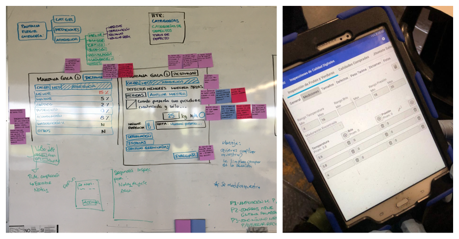
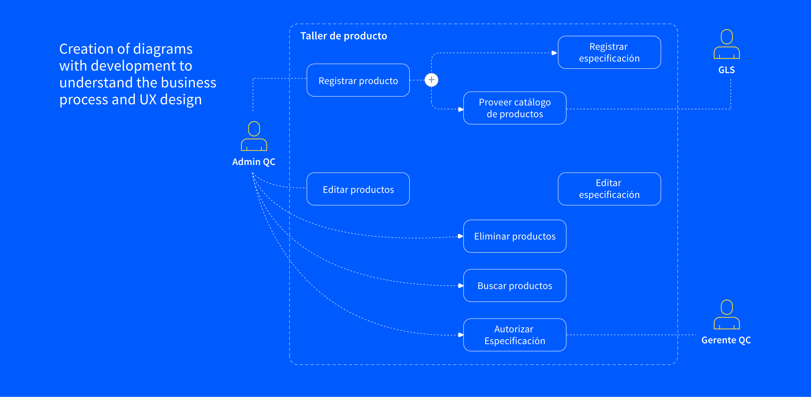
/ Initial Sketches to Explore Ideas
Next, explore various solutions and sketches based on the collected information, indetifying key inputs and insights for registering data in the application to ensure optimal product quality inspection and decision-making.
Develop solutions to reduce time by collaborating with the content and research team on how to present information effectively. Identify unnecessary fields and integrate visual aids, such as images of common defects and accepted product characteristics, along with ranges or percentages, to support decision-making and improve efficiency.
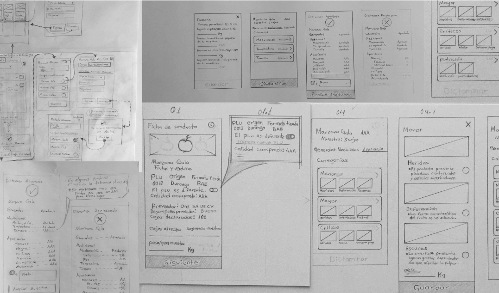
/ Wireframes and User Flows
Low-fidelity wireframes and prototypes were developed and presented to the client, showcasing solutions created collaboratively with the internal team.
This process allowed us to gather feedback, ensure alignment with the client’s needs, and secure approval to define the visual style and apply brand guidelines. The client also appreciated the integration of new business rules that supported different types of inspections.
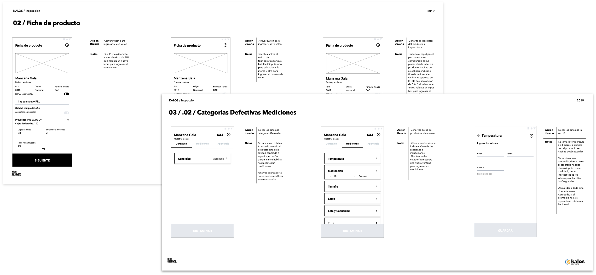
/ High-Fidelity Screens
The final Android and desktop designs align with the brand’s visual identity and directly address the client’s needs for efficient product inspections.
Through these improvements, the solution not only enhanced usability but also improved team efficiency and product scalability: - Optimized data capture to minimize errors during inspections. - Streamlined flows by removing unnecessary steps and focusing solely on product inspection. - Implemented reusable components to accelerate development and ensure consistency.
These enhancements delivered a smoother inspection experience, reduced friction for users, and established a scalable foundation for future iterations.
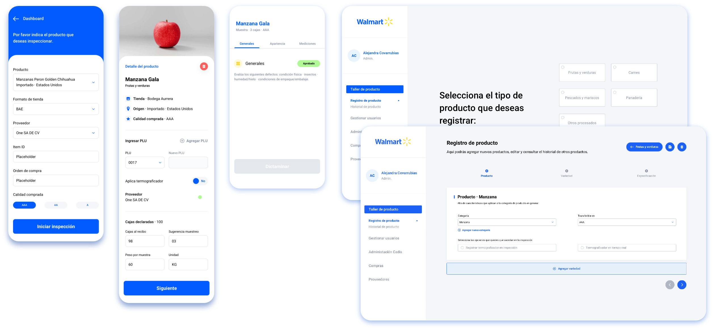
/ About the Project
A project starting from the kickoff phase, where the team aimed to present solutions, proposals, and technology implementations based on client needs.
Goal:
Understand the business, gather insights, and identify key profiles involved in the process. Identify pain points and opportunities, develop current and future state blueprints, and propose solutions based on findings.
Problem:
From user sessions, the following key findings emerged:
* Lack of a support and advice section.
* Difficulty replacing damaged products quickly.
* No tracking system for products to start a project.
* Uncertainty regarding installation for some products and lack of professional feedback for installation.
My role: Designed and defined persona illustrations, format information for blueprints, and established color palette, typography and iconography.
Collaborated with the research team to develop and refine concepts for future solutions. Created a mood board to ideate and conceptualize different solutions, leading to the design of screens for both mobile and desktop platforms based on findings.
/ Current-State Journey Map & Future-State Blueprint
Define current and future blueprints, establish the style guide, and highlight key information, pain points, opportunity areas, and scenarios. Identify user interactions, tools, task timings, and technologies for solution development.
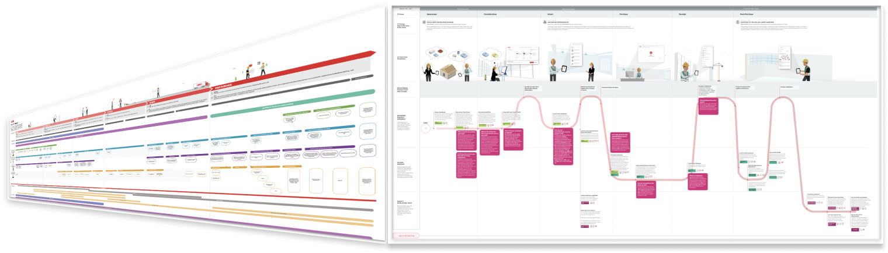
/ User Personas & Scenarios
Design persona illustrations, brainstorm scenarios and actions, and develop different phases with key user interactions and value propositions to represent the proposal in the client document.
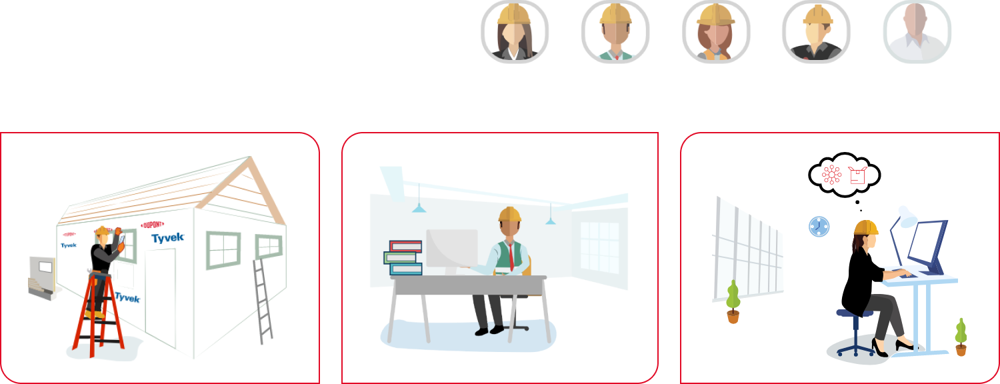
/ Wireframes and User Flows
These screens, designed for both mobile and desktop, represent solutions based on insights and findings from the research. They were created to conceptualize and define future solutions, engage the client and present opportunity areas more specifically.
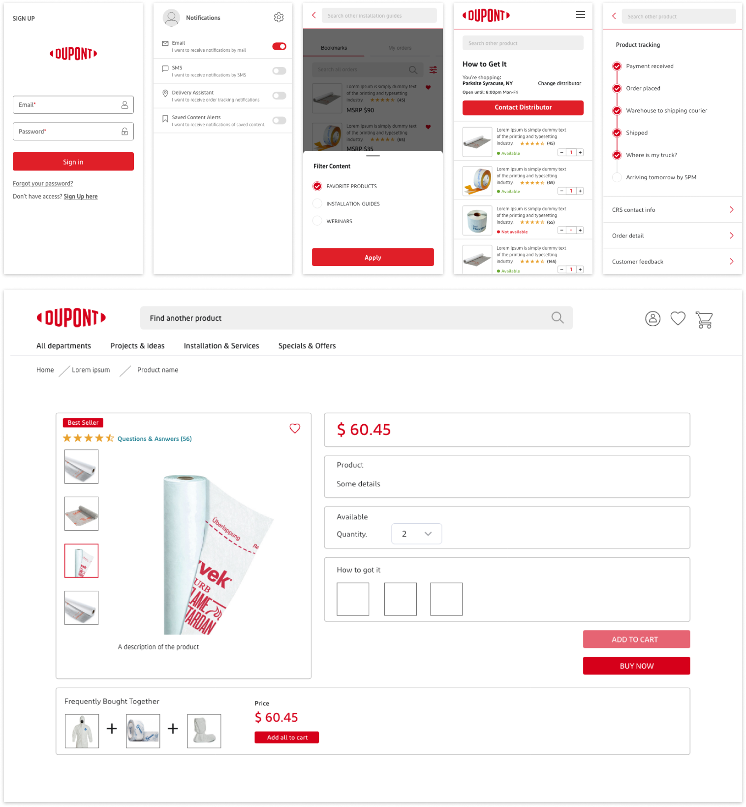
/ About the Project
Goal:
Develop an application to control the entry and exit of products as well as the supply.
Problem:
At the end of the year, they conduct an inventory to justify annual expenses and submit a budget request for the following year.
* No record of product inventory *
Unverified expenses * Lack of communication
My role:
I started by understanding user’s problems and needs. Then I developed a research plan to define clear goals and outline the necessary steps to achieve them.
Additionally, I conducted interviews to better understand the process, how they interact with other areas, and how they share documents to request materials.
/ User Flows & Flowcharts
I created a questionnaire to gather information as there was no existing data. I also collaborated with the development team to create initial flowcharts and identify user profiles and roles.
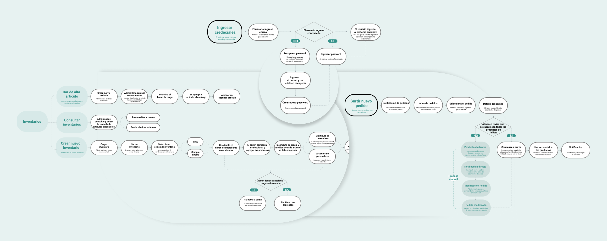
/ Sketches & Braindstorming
After gathering data, I create a moodboard to begin addressing ideas and concepts, defining design elements that align with the brand’s identity, including the color palette, iconography, and typography serving as a fundation for developing the design system.
I started by creating initial sketches to define the main screens, then collaborated with developers to refine navigation and establish the information architecture. We identified key sections, including the dashboard, reports, items, and order fulfillment and warehouse management.
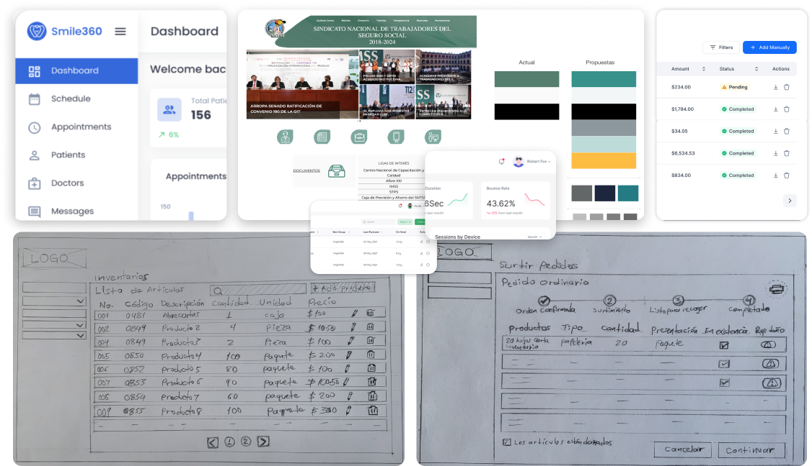
/ Defining the Design System
I developed the design system from scratch, collaborating closely with the dev team to define deliverables, guidelines, and track design progress through regular reviews.
We defined typography variants (titles, subtitles, paragraphs), primary and secondary color palettes, success/error messages, button styles and states, as well as iconography and images.
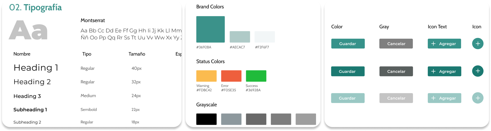
/ High-Fidelity Screens
The grid was defined, and high-fidelity screens were developed, implementing the previously established design system for registration and management of the client’s solution.
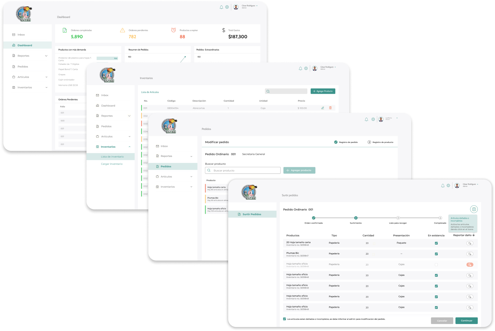